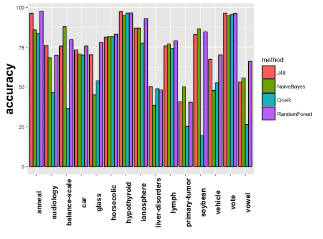
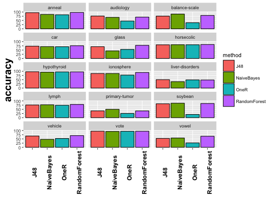
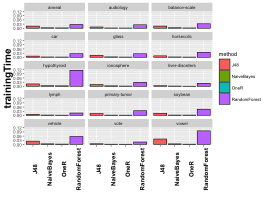
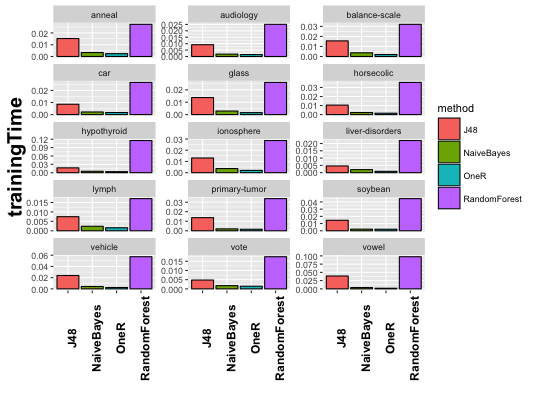

plotExpSummary(exp, output, columns = 0, freeScale = FALSE, fun = identity, grayscale = FALSE)
This function builds a barplot for a given experiment output variable, summarizing its distribution according to the different methods and problems. The aspect of the plot can be parametrized in several ways.
Please notice that the plot function requires that an unique configuration of parameters is present in the experiment. So the user must have processed and instantiated the experiment before.
# This example plots the distribution of the trainingTime variable in the # wekaExperiment problem. # First we create the experiment from the problem. experiment <- expCreate(wekaExperiment, name="test", parameter="fold") # Next we must process it to have an unique parameter configuration: # We select a value for the parameter featureSelection: experiment <- expSubset(experiment, list(featureSelection = "yes")) # Then we reduce the fold parameter: experiment <- expReduce(experiment, "fold", mean) # Finally we remove unary parameters by instantiation: experiment <- expInstantiate(experiment, removeUnary=TRUE) # Now we can generate several plots: # Default plot: plotExpSummary(experiment, "accuracy")
[1] "Results for output \"accuracy\""# We can include faceting in the plot by dividing it into columns: plotExpSummary(experiment, "accuracy", columns=3)
[1] "Results for output \"accuracy\""# If we want to show the independent interaction for the output variable # in each experiment we can make the scales for example, remark the difference # in : plotExpSummary(experiment, "trainingTime", columns=3, freeScale=FALSE)
[1] "Results for output \"trainingTime\""
[1] "Results for output \"trainingTime\""